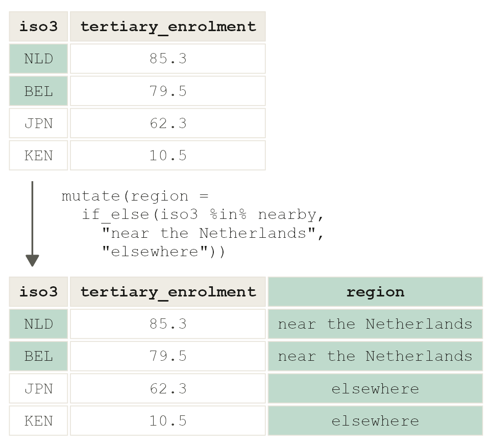
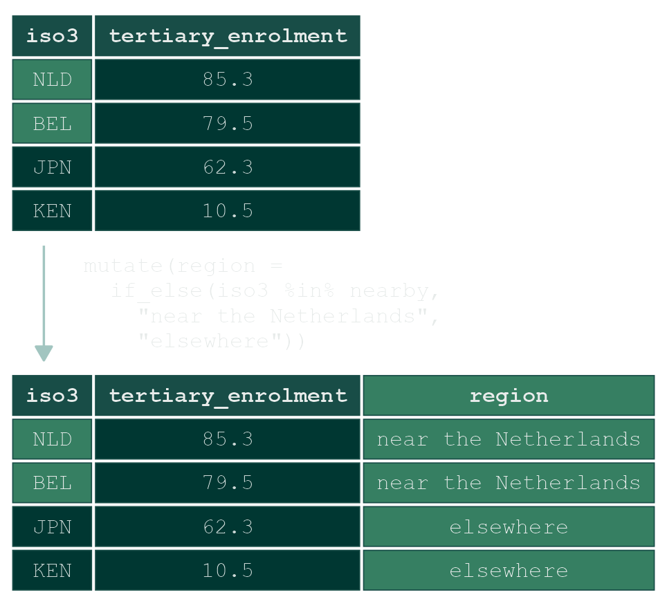
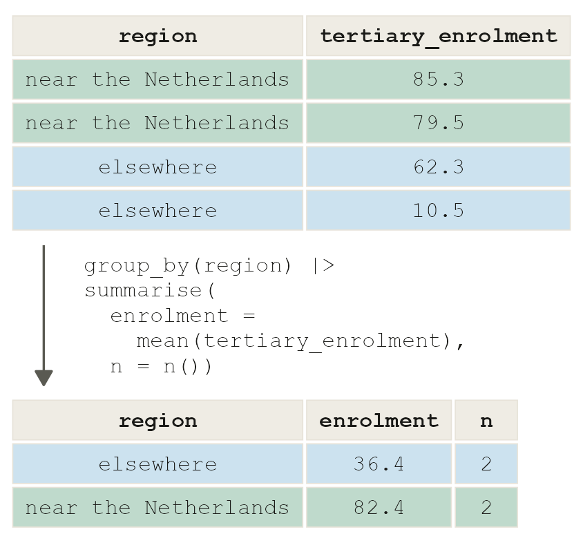
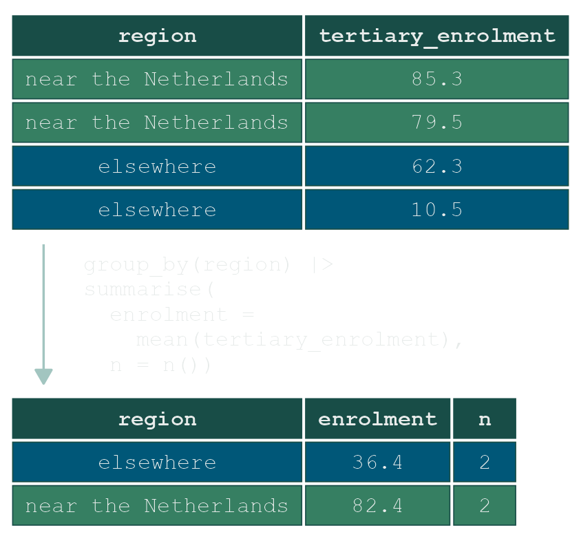

library(tidyverse)
source("theme-dsvar.R")
theme_set(theme_dsvar())Factors, bars and reordering
Week 2 · Work group
04 ENCODING Thursday 13:30 · 105 min
Tuesday’s lecture asked compared to what? of Du Bois’s 1900 chart, the PISA league table, Mayr’s first radar chart, the median income of every US state and an experiment with six social media feeds. It named four settings that answer the question: where the axis starts, how it is sorted, who is in it, and per what. Today the same question goes to a dataset the lecture never showed you: 117 countries from the World Bank.
TWO PARTS, FROM THIS WEEK ON
Part I, together. The teacher builds one chart from today’s dataset, step by step, and you run each step on your own screen. It shows you this week’s tools. Nothing from Part I is handed in.
Part II, on your own. You build a different chart from the same dataset, without code to copy. You draw it on paper in the room and start building it; the build and its misleading twin you finish at home. The sketch, the chart and the twin are portfolio entry 1, and the only thing you hand in.
Schedule
| min | |||
|---|---|---|---|
| 13:30 | Meet the data | 10 | One row per country. Name the type of every column out loud |
| 13:40 | Part I · together | 45 | One chart, built with the teacher: a chart that lies, a categorical variable made with mutate(), groups compared with summarise(), sorted bars, one country marked, the claim in the title. Two short turns of your own |
| 14:25 | Part II · Draw it | 10 | Pairs, paper, felt pen. Your chart, for the claim it should support |
| 14:35 | Part II · Build it | 40 | Start on your own, from your sketch. The rest of the build and the twin are for home. At the end: what you hand in on Sunday |
0 · Setup
Unzip it into your dsvar folder and double-click dsvar-week-02.Rproj. The folder has two Quarto files, one for each part:
week-02-part1.qmd |
Part I, with the teacher. Every step of the example, ready to run. Not handed in |
week-02-part2.qmd |
Part II, on your own. Empty chunks for your chart and its twin. This is what you hand in |
theme-dsvar.R |
The course theme |
data/ |
Today’s dataset |
Both start with the same setup lines as last week:
Part I · Together
Open week-02-part1.qmd. The teacher goes through it on the screen, and you run each chunk on yours. Before you run a chunk, say what you expect it to do. No AI in Part I, code completion included: this is where you learn the code you will later judge a tool’s output against.
1 · Meet the data
wb <- read_csv("data/worldbank-indicators.csv")
glimpse(wb)| Column | What it is |
|---|---|
iso3, country |
The country, as a three-letter code and as a name |
female_labour |
Women aged 15 and over who are in the labour force, % (the ILO’s modelled estimate) |
internet_pct, urban_pct, over_65_pct |
Share of the population online, living in cities, aged 65 and over, % |
tertiary_enrolment |
Enrolled in higher education, as a % of the age group: a gross ratio |
life_expectancy, fertility |
Years at birth; births per woman |
gdp_per_capita, gdp_growth, gini |
Income per person in US dollars, annual growth in %, inequality from 0 to 100 |
Source, for every caption you write today: World Bank, World Development Indicators.
Type the columns
Before any code, the room goes down the glimpse() output and gives every column one of these words. This happens every week from now on.
| identifier | names a row; you never compare by it |
| categorical | sorts rows into groups: nominal if the groups have no order, ordinal if they do |
| continuous | a measured quantity; differences between values mean something |
| date | a point in time, and ordered by nature |
Then the question the rest of the session builds on: which columns can sort countries into groups? The answer is none. country is an identifier, with one of each, and the other ten are continuous. A dataset with no categorical variable cannot be compared by group at all until you make one, and making one is a decision about the argument.
THREE THINGS TO NOTICE
- Greece’s
tertiary_enrolmentis 144. A gross ratio counts everyone enrolled, at any age, against the population of the usual student age. It is not a share of people, and it can pass 100. - The Netherlands’
gdp_growthis -3.9. Whatever year that is, it is not this one. Every row is the most recent year available for that country, and the years differ between countries. - There are no missing values. That is unusual: the dataset was built from countries with a recent value for every column, so these 117 are not all the world’s countries. Which ones would drop out first?
2 · A chart that runs and lies
The example question for Part I: how does the Netherlands compare with the countries around it on higher education? This first attempt runs without an error and looks finished. It lies twice. Find both before going on.
nearby <- c("NLD", "BEL", "LUX", "DEU", "FRA", "GBR", "DNK", "CHE", "AUT")wb |>
filter(iso3 %in% nearby) |>
ggplot(aes(tertiary_enrolment, country)) +
geom_col() +
coord_cartesian(xlim = c(60, 90))3 · A categorical variable, made on purpose
“Near the Netherlands” is not in the dataset, so make it. %in% asks, for every row, whether its code is in the list; if_else() turns the answer into two groups.


wb <- wb |>
mutate(region = if_else(iso3 %in% nearby, "near the Netherlands", "elsewhere"))
count(wb, region)That is a nominal categorical variable: two groups, no order between them. Which countries count as “near” is a choice, and a different list would give a different chart.
With a group in the dataset, the verbs from week 1 can compare the groups. group_by() + summarise() gives one row per group:


wb |>
group_by(region) |>
summarise(enrolment = mean(tertiary_enrolment), n = n()) |>
arrange(desc(enrolment))PREDICT, THEN RUN
Which group has the higher mean, and how many countries does each mean stand for? Then look at n: one of these averages is over nine countries, the other over 108.
YOUR TURN · 1
Compare the two groups on internet_pct instead of tertiary_enrolment. Which group is more online, and how many countries does each mean stand for?
A mean per group is one number per group, and a chart of two bars would hide everything this dataset knows about the countries. The rest of Part I shows them all.
4 · Sorted, one country marked, and the first theme() call
A character column has no order of its own, so it gets the alphabet. A factor is a categorical variable that carries its order with it, and fct_reorder() sets that order from another column. This is the form of Du Bois’s 1900 chart from Tuesday: sorted bars, one of them marked.
PREDICT, THEN RUN
Which country will be first in levels() after the line below: the lowest value or the highest?
near <- wb |>
filter(region == "near the Netherlands") |>
mutate(country = fct_reorder(country, tertiary_enrolment))
levels(near$country)The lowest value is the first level, and a vertical axis counts up from the bottom, so the longest bar lands on top. Colour costs the reader attention, so spend it on one thing: the country the question is about. And once the bars are sorted, the gridlines between them carry nothing.
ggplot(near, aes(tertiary_enrolment, country,
fill = country == "Netherlands")) +
geom_col() +
scale_fill_manual(values = c("grey75", dsvar_accent())) +
theme(legend.position = "none",
panel.grid.major.y = element_blank())theme() changes ink, not data: which lines are drawn, where the legend sits, how big the type is. Nothing in it can change a value or an order.
5 · The claim in the title
The claim goes in the title, the most-read line on the chart. The caption gets the three things every chart in this course carries: the n, the source, and what the chart cannot tell you.
ggplot(near, aes(tertiary_enrolment, country,
fill = country == "Netherlands")) +
geom_col() +
scale_fill_manual(values = c("grey75", dsvar_accent())) +
labs(title = "Only Austria enrols more students in higher education than the Netherlands",
subtitle = "Gross enrolment in higher education, % of the age group, the Netherlands and eight nearby countries",
caption = "n = 9 countries · World Bank, World Development Indicators · gross ratio: counts students of any age, most recent year for each country",
x = NULL, y = NULL) +
theme(legend.position = "none",
panel.grid.major.y = element_blank())YOUR TURN · 2
Draw the same sorted chart for internet_pct, with the Netherlands marked. Where does the Netherlands land now, and how far is it from the country above it?
Everything you need for Part II is now on your screen.
Part II · On your own: portfolio entry 1
What you hand in · portfolio entry 1 · due Sunday
Your sketch, your chart and its misleading twin, in week-02-part2.qmd. That file is the only thing you hand in. It has the data and the EU codes loaded, and empty chunks for the rest. There is no code to copy on this page: Part I is your model, and the reference sheet has the syntax on other data.
The claim your chart should support
The Netherlands has the highest share of women in work in the EU.
And the twin you will build from the same column:
Sixteen countries have a higher share of women in work than the Netherlands.
Both sentences are true of this dataset. Only one choice will differ between the two charts, and naming it is part of the entry.
6 · Draw it
ON PAPER · IN PAIRS · 10 MIN
The Netherlands has the highest share of women in work in the EU.
Draw the chart that supports the first claim, with a felt pen. No laptop.
- Which countries are on it, and how would you know which ones to keep?
- Bars or dots? Where does the axis start, and why?
- In what order do the countries go down the page?
- How does a reader find the Netherlands without reading every label?
The teacher reads the sketches before anyone opens RStudio. Keep yours and photograph it: the sketch is part of what you hand in.
7 · Build it
Build your sketch in the chunk The chart of week-02-part2.qmd: start in the room, finish at home. The column is female_labour; the 27 EU codes are already in eu_members. The finished chart carries the claim as its title, and the n, the source and what it cannot tell you in its caption.
AI is allowed from here on: describe how you used it in the entry’s AI statement.
STUCK?
Find the step in Part I that did the same job, and do it again on this column: making the group (step 3), keeping and sorting the countries (step 4), marking one (step 4), the claim and the caption (step 5).
BEFORE THE TWIN
The title says highest. What would a reader need to know to decide whether “highest” is a good thing? Write one sentence. You will need it at 15:05.
8 · Twist it
Same column. In the chunk The misleading twin, build a chart that supports the second claim:
Sixteen countries have a higher share of women in work than the Netherlands.
The rule: only changes you could defend in a paper. No cut axis, no alphabetical order, nothing a reviewer would send back. This one is for home.
If you want to go further, ask the chart the question the first one could not answer: who are the sixteen? gdp_per_capita can become a second categorical variable, this time an ordinal one, because income bands have an order. cut() makes it.
Hand it in
Next Tuesday’s lecture opens with a critique of some of the handed-in entries, shown as screenshots and without names.
What you hand in · portfolio entry 1 · due Sunday
week-02-part2.qmd, with these six things in it:
- Your sketch, photographed and saved in the week folder as
sketch.jpg. The file shows it automatically. If your phone saves.heic, export the photo as JPG first: browsers cannot show HEIC. - The chart for the first claim, with the claim as its title.
- The misleading twin for the second claim, made only with choices you could defend.
- One sentence: which choice did the work, named as Tuesday named it: where the axis starts, how it is sorted, who is in it, or per what.
- What the charts cannot tell you, in a sentence or two.
- Your AI statement, as the AI use page describes it.
Render the file, then upload week-02-part2.html to Canvas. Only that file: nothing from Part I, and not the whole folder. The HTML holds your code and your charts together, which is what the portfolio is built from.
Reference sheet
Everything today used, with one line on what it claims rather than what it does. The examples run on mpg and precip, built into R, so that they cannot be pasted into today’s build without being understood first. The forms themselves are in the field guide: sorted bars, dot plot, bar chart of counts.
NoteCategorical variables: character, factor, ordered
A character column has no order, so ggplot uses the alphabet. A factor carries its order in levels(). An ordered factor also says the order means something, which is what cut() produces from a continuous variable.
class(mpg$class) # character: alphabetical when plotted
levels(fct_infreq(mpg$class)) # a factor, ordered by count
levels(fct_reorder(mpg$class, mpg$hwy, .fun = median)) # ordered by another column
levels(fct_lump_n(mpg$manufacturer, n = 4)) # the four biggest, everyone else "Other"
cut(c(12, 25, 41), breaks = c(0, 20, 30, Inf),
labels = c("thirsty", "middling", "frugal")) # continuous into ordinal bandsfct_lump_n() is an editorial act: “Other” is where things go to stop being compared. Say in the caption what is in it.
NoteBars and dots
geom_col() draws a value you already have; geom_bar() counts rows for you. Both are lengths, so both need zero. geom_point() is a position, which is why a dot plot may start its axis elsewhere, and why it should say so.
tibble(city = names(precip), inches = precip) |>
slice_max(inches, n = 8) |>
ggplot(aes(inches, fct_reorder(city, inches))) + # category on y: labels stay readable
geom_col() +
labs(x = "inches of rain a year", y = NULL)
NoteThe first
theme() call
theme() changes ink, never data. The two lines you need this week:
... + theme(legend.position = "none", # the colour is explained in the title
panel.grid.major.y = element_blank()) # bars sorted: lines between them say nothingtheme_set() at the top of a session sets the defaults for everything after it; + theme(...) on one chart changes that chart only.
NoteOne colour, spent on purpose
mpg |>
count(class) |>
ggplot(aes(n, fct_reorder(class, n), fill = class == "suv")) +
geom_col() +
scale_fill_manual(values = c("grey75", dsvar_accent())) +
labs(x = "cars in the data", y = NULL) +
theme(legend.position = "none", panel.grid.major.y = element_blank())